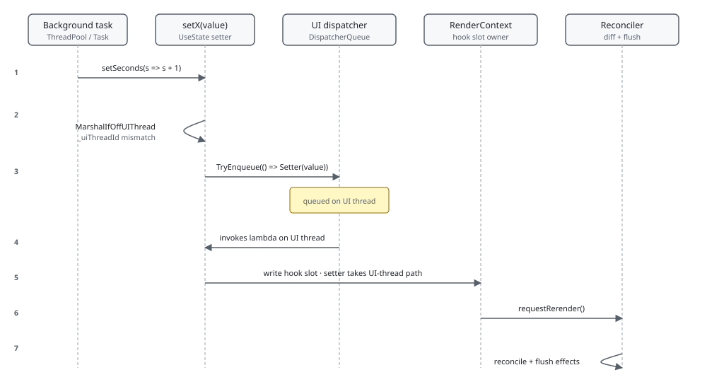

Threading and Dispatch¶
Microsoft.UI.Reactor (Reactor) has one UI thread invariant: the reconciler, every hook setter,
and every WinUI property write must happen on the thread that captured
the dispatcher at app bootstrap. When a setter is called from a
background task, RenderContext auto-marshals it onto that
captured dispatcher; if you opt a hook into threadSafe: true, the
write happens in place under a per-cell lock instead. This page covers
which call sites enforce the invariant, how the marshal works, and the
two error modes that bypass it loudly rather than silently.
The UI-thread invariant¶
The render context records Environment.CurrentManagedThreadId at the
start of every render pass. Every subsequent hook-setter call compares
against that captured id and routes accordingly:
private bool MarshalIfOffUIThread(string hookName, Action work)
{
// Hot path — same thread that ran BeginRender. ~1ns TLS read + cmp + branch.
if (Environment.CurrentManagedThreadId == _uiThreadId) return false;
The hot path is Environment.CurrentManagedThreadId == _uiThreadId —
one TLS read, one compare, one branch. Same-thread callers pay
essentially nothing; the marshal path only runs when the comparison
fails. The same predicate guards hooks beyond setters: Action-typed
hook callbacks, effect bodies, and reconciler mutations all assume the
UI thread.
| Call site | Thread invariant | What enforces it |
|---|---|---|
Component.Render() |
UI thread | RenderContext.BeginRender captures _uiThreadId; reconciler invokes on the dispatcher |
setX(...) / updateX(...) from UseState / UseReducer |
Any thread | MarshalIfOffUIThread in RenderContext.cs |
setX(...) with threadSafe: true |
Any thread | per-cell lock in ValueHookState<T>; no marshal hop |
NavigationHandle mutators (Navigate / GoBack / GoForward / Replace / Reset / PopTo / SetState) from UseNavigation |
Any thread | UIThreadMarshal gate in NavigationHandle.cs (auto-marshal; shares EnqueueOrThrow with MarshalIfOffUIThread) |
UseEffect body |
UI thread | RenderContext.FlushEffects runs on the dispatcher |
UseEffect cleanup |
UI thread | same dispatcher as flush |
Reconciler.Reconcile |
UI thread | host calls it from a dispatcher continuation |
ReactorWindow / tray-icon / OpenWindow mutators |
UI thread | ThreadAffinity.ThrowIfNotOnUIThread |
QueryCache reads + writes |
Any thread | per-slot lock + ConcurrentDictionary |

Cross-thread setters auto-marshal¶
Calling setX(value) from a Task.Run, a PeriodicTimer loop, or
after await ... ConfigureAwait(false) is correct by default — the
setter detects the off-thread call and queues itself back onto the
captured dispatcher:
private Action<T> MakeStateSetter<T>(ValueHookState<T> h)
{
void Setter(T newValue)
{
bool changed;
if (h.ThreadSafe)
{
lock (h.Lock!)
{
changed = !EqualityComparer<T>.Default.Equals(h.Value, newValue);
if (changed) h.Value = newValue;
}
if (Diagnostics.ReactorEventSource.Log.IsEnabled(
global::System.Diagnostics.Tracing.EventLevel.Verbose,
Diagnostics.ReactorEventSource.Keywords.State))
Diagnostics.ReactorEventSource.Log.StateChange("UseState", typeof(T).Name, changed);
if (changed) _requestRerender?.Invoke();
}
else
{
if (MarshalIfOffUIThread("UseState", () => Setter(newValue))) return;
changed = !EqualityComparer<T>.Default.Equals(h.Value, newValue);
if (changed) h.Value = newValue;
if (Diagnostics.ReactorEventSource.Log.IsEnabled(
global::System.Diagnostics.Tracing.EventLevel.Verbose,
Diagnostics.ReactorEventSource.Keywords.State))
Diagnostics.ReactorEventSource.Log.StateChange("UseState", typeof(T).Name, changed);
if (changed) _requestRerender?.Invoke();
}
}
return Setter;
}
The marshalled lambda re-enters Setter(newValue) on the UI thread,
which falls into the hot path the second time around. One
DispatcherQueue.TryEnqueue per cross-thread call — microseconds, not
free, but vastly cheaper than the bugs you would hit writing the field
directly from a worker.
The two failure modes throw immediately rather than swallow:
- No captured dispatcher.
ReactorApp.UIDispatcher is null— typical in unit tests, headless renders, or before bootstrap has finished. The setter throwsInvalidOperationExceptionnaming the thread and the captured UI thread id so the test failure points at the missing host setup. - Dispatcher refused the enqueue.
TryEnqueuereturns false when the dispatcher has begun shutting down. The setter throws rather than dropping the update silently — that update was lost, and a loud throw beats a state cell that mysteriously stops advancing near window close. Cancel background producers in your effect cleanup so they stop before the window closes.
The same machinery now covers UseNavigation (issue #234). A
NavigationHandle<TRoute> captures the UI thread id when it is created,
and its mutators — Navigate, GoBack, GoForward, Replace,
Reset, PopTo, and SetState — auto-marshal the whole operation onto
that dispatcher when called off-thread, throwing the same two failure
modes above when no live dispatcher is available. Both paths share one
UIThreadMarshal.EnqueueOrThrow implementation, so the setter marshal
and the navigation gate stay behaviourally identical. The bool the
mutators return reports whether the operation was scheduled, not
whether the navigation ultimately succeeded — off-thread callers must
not treat true as confirmation that the stack changed.
The trampoline guard for non-setter mutators¶
Setters reach the UI thread via auto-marshal. Other mutators — opening
a window, changing tray-icon state, the spec-036 ReactorWindow
surface — assert the UI-thread invariant explicitly via ThreadAffinity:
public static void ThrowIfNotOnUIThread(string memberName)
{
var dispatcher = ReactorApp.UIDispatcher;
if (dispatcher is null) return;
if (dispatcher.HasThreadAccess) return;
throw new InvalidOperationException(
$"{memberName} must be called on the UI thread. " +
"Use ReactorApp.UIDispatcher.TryEnqueue(...) to marshal the call. (spec 036 §0.4)");
}
ThrowIfNotOnUIThread is the assert; callers that need to be UI-thread
affine call it at the top. When no dispatcher has been captured (early
bootstrap, fixture setup), the assert is a no-op — those phases happen
on the bootstrap thread before there is a UI thread to gate against.
Once UIDispatcher is captured, the assert is mandatory: any
non-affine call site has to either dispatcher.TryEnqueue(...) or
fail loudly.
threadSafe: true skips the marshal¶
UseState<T>(initial, threadSafe: true) and the matching UseReducer
overload route writes through a per-cell lock instead of the
dispatcher. The trade-off is visibility: a non-thread-safe setter
serializes through the UI tick, so the next read inside the same
synchronous reducer sees the post-write value only after the queued
call drains. Thread-safe setters serialize under a lock, so concurrent
producers settle deterministically before any of them returns, but the
re-render still ends up on the UI thread because _requestRerender is
itself dispatcher-affine. Reach for threadSafe: true when you have
many concurrent producers writing the same hook (ingest loops, sensor
callbacks); leave it off for the common case where one or two
background tasks update state.
The change-echo suppressor¶
A separate UI-thread-only concern: programmatic writes to a control
that raise a Changed event would re-enter the user's OnChanged
callback with a value the framework just wrote. Reactor drops those
echoes with a documented hybrid — two mechanisms, both parked on the
same attached ReactorState.
Value-diff (the arm). For controlled round-trips that are single
valued, exactly comparable, and synchronous — ComboBox, FlipView,
GridView, ListBox, Pivot, PipsPager, RadioButtons,
SelectorBar, TabView, TemplatedFlipView, ToggleSwitch,
TextBox — the engine arms ReactorState.PendingEchoMatch with a
one-shot predicate describing the value it is about to write
(ArmExpectedEcho), then writes bare. The change trampoline calls
ShouldSuppressEcho, which consumes the arm and drops the single event
whose readback matches. A mismatch means a real user change superseded
the pending write, so the arm is cleared and the event falls through.
Descriptor authors opt in via .Controlled / .HandCodedControlled
(valueDiffEcho).
Counter (the fallback). ChangeEchoSuppressor is retained for
everything value-diff cannot model: doubles (Slider / NumberBox
value), NumberBox coercion, CalendarView's collection diff,
deferred or coercing strings (AutoSuggest / Password / RichEdit),
Expander, CheckBox path B, the ApplySetters suppression scope,
and the public WriteSuppressed primitive.
internal static void BeginSuppress(UIElement control)
{
if (control is not FrameworkElement fe) return;
Reconciler.GetOrCreateReactorState(fe).EchoSuppressCount++;
}
/// <summary>
/// Returns <c>true</c> if the current event fire should be suppressed (and
/// decrements the counter). Returns <c>false</c> otherwise. Call at the top
/// of a change-event handler before invoking the user's OnChanged.
/// </summary>
internal static bool ShouldSuppress(UIElement control)
{
if (control is not FrameworkElement fe) return false;
if (fe.GetValue(Reconciler.ReactorAttached.StateProperty) is not Reconciler.ReactorState state)
return false;
return ShouldSuppress(state);
}
/// <summary>
/// Issue #207 — suppression check for trampolines that already hold the
/// control's <see cref="Reconciler.ReactorState"/> (read once via
/// <see cref="Reconciler.TryGetReactorState"/>). Identical decrement-and-
/// suppress semantics to <see cref="ShouldSuppress(UIElement)"/>; the
/// UIElement overload delegates here after a single attached-DP read so a
/// change handler pays one DP read instead of two.
/// </summary>
internal static bool ShouldSuppress(Reconciler.ReactorState state)
{
// §8.2 — setter-suppression scope: drop the echo without consuming a
// counter token. The scope wraps ApplySetters, where the engine can't
// predict which value-bearing DPs the user's `.Set(...)` will write.
if (state.EchoSuppressScopeDepth > 0) return true;
if (state.EchoSuppressCount > 0)
{
state.EchoSuppressCount--;
return true;
}
return false;
}
BeginSuppress increments a counter attached to the WinUI control;
ShouldSuppress checks-and-decrements at the top of the change-event
handler. The pair is one-for-one with the programmatic write — if a
write doesn't actually change the value, suppress is balanced by an
event that never fires, so callers guard with an equality check first.
EchoSuppressScopeDepth is the non-consuming sibling: while an
ApplySetters scope is open, every change event on the control is
dropped without spending a token, because the engine cannot predict
which DPs a user's .Set(...) will write. Both counters live on a
DependencyObject attached property rather than
a ConditionalWeakTable because WinRT projection
can hand the same native object back as different managed wrappers,
and only the attached DP survives that round-trip.
Custom-control authors never touch ChangeEchoSuppressor directly — it
is internal by design. The supported entry points are
ReactorBinding.WriteSuppressed (reached in a handler via
ctx.BindFor(ctrl, el).WriteSuppressed(...)) and, for descriptor
authors, the .Controlled / .HandCodedControlled opt-ins.
An equality guard is necessary but not sufficient: it proves the write
isn't a no-op, not that the control will accept it. A write the
control refuses raises no event either, and the counter cannot tell
the difference — the token simply waits, and the next real user
interaction is consumed instead (issue #1090). Selection is the case
where this bites: WinUI will not honour a SelectedIndex past the end
of its ItemsSource, which happens routinely while a list's items are
still loading. So gate on reachability as well as drift, and skip the
write entirely when it cannot land — never write without arming, or
the control's own event leaks back into the user callback.
Tips¶
Don't Thread.Sleep on the UI thread. Block the dispatcher and
the reconciler stops too — pending renders, queued effects, and any
marshalled setters from background tasks all stall together. Use
Task.Delay from a worker and let the setter marshal back.
One captured dispatcher per process. ReactorApp.UIDispatcher is
set during host bootstrap. Multi-window apps share the same dispatcher
(spec 036). Background services that fan out to several windows post
through the same TryEnqueue — no per-window threading.
Prefer auto-marshal over manual TryEnqueue in render code. The
setter already does the right thing; wrapping it in another
TryEnqueue queues a no-op onto the queue and just costs an extra
hop. Manual TryEnqueue is for non-setter UI mutations.
The throw is the point. If a setter throws because no dispatcher
was captured, you're in a unit-test or headless context that needs to
drive RenderContext directly. Don't catch it — the throw is your
signal to wire the test fixture (ReactorHost, TestRenderHost) so
the dispatcher is captured before the setter runs.
Next Steps¶
- Effects scheduling — Previous: where flush runs (always on this same UI thread).
- Element pool — Next: the per-thread pool the reconciler rents controls from.
- Hooks — Surface for
UseState(threadSafe: true). - Architecture overview — Where the dispatcher fits in the render loop.